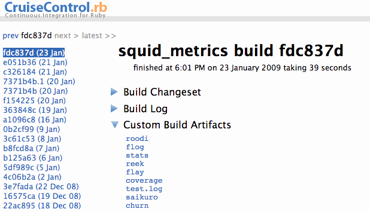

About metric_fu 0.9.0
Metric_fu is a set of rake tasks that make it easy to generate metrics reports. It uses
Saikuro,
Flog,
Flay,
Rcov,
Reek,
Roodi,
Subversion,
Git, and
Rails
built-in stats task to create a series of reports. It's designed to integrate easily with
CruiseControl.rb
by placing files in the Custom Build Artifacts folder.
Output:
{kind=link}


Installation:
First do this:
sudo gem install jscruggs-metric_fu -s http://gems.github.com/
Then in your Rakefile:
require 'metric_fu'
If you like to vendor gems, you can unpack metric_fu into vendor/gems and require it like so:
require(File.join(RAILS_ROOT, 'vendor', 'gems', 'jscruggs-metric_fu-0.8.9', 'lib', 'metric_fu'))
Then you don't have to install it on every box you run it on.
Later versions of Rails like to manage your gems for you, so you can put this in your environment.rb file:
config.gem 'jscruggs-metric_fu', :version => '0.9.0', :lib => 'metric_fu', :source => 'http://gems.github.com'
And then issue these commands:
$ rake gems:install $ rake gems:unpack
That way Rails won't yell at you everytime you run a Rake task:
config.gem: Unpacked gem jscruggs-metric_fu-0.9.0 in vendor/gems has no specification file. Run 'rake gems:refresh_specs' to fix this.
I hate being yelled at.
Usage:
Out of the box metric_fu provides these tasks:- rake metrics:all # Generate coverage, cyclomatic complexity, flog, flay, railroad, reek, roodi, stats...
- rake metrics:all_with_migrate # Generate metrics after migrating (for continuous integration)
- rake metrics:churn # Which files change the most
- rake metrics:flay # Generate code duplication report with flay
- rake metrics:flog:all # Generate and open flog report
- rake metrics:flog:clean # Delete aggregate flog data.
- rake metrics:flog:controllers # Flog code in app/controllers
- rake metrics:flog:custom # Generate a flog report from specified directories
- rake metrics:flog:helpers # Flog code in app/helpers
- rake metrics:flog:lib # Flog code in lib
- rake metrics:flog:models # Flog code in app/models
- rake metrics:reek # A code smell report using Reek
- rake metrics:roodi # A Ruby coding standards report using Roodi
- rake metrics:saikuro # A cyclomatic complexity report using Saikuro
- rake metrics:stats # A stats report
See below for more detail on the individual tasks. I recommend using CruiseControl.rb to set up a metrics build. See the CruiseControl.rb online docs for more info on how to set up cc.rb and, once you've got that figured out, change the cruise_config.rb file inside your project to have these lines:
project.rake_task = 'metrics:all_with_migrate'
project.scheduler.polling_interval = 24.hours
Which will check for updates every 24 hours and run all the metric_fu rake tasks (migrating your test db first). The output will be visible from an individual build's detail page. Like so:
General notes on configuration:
Metric_fu can be customized to your liking by adding the following to your Rakefile:
MetricFu::Configuration.run do |config|
#define which metrics you want to use
config.metrics = [:coverage, :flog]
config.churn = { :start_date => lambda{ 3.months.ago } }
config.coverage = { :test_files => ['test/**/test_*.rb'] }
config.flog = { :dirs_to_flog => ['cms/app', 'cms/lib'] }
config.flay = { :dirs_to_flay => ['cms/app', 'cms/lib'] }
config.saikuro = { "--warn_cyclo" => "3", "--error_cyclo" => "4" }
end
Notes on metrics:coverage
When creating a coverage report, metric_fu runs all the tests in the test folder and specs in spec folder using Rcov.
Notes on metrics:saikuro
Saikuro is bundled with metric_fu so you don't have to install it. Look at the SAIKURO_README (or the internet) for more documentation on Saikuro. If you wish to change the options Saikuro is run with, then set it like so in your Rakefile:
config.saikuro = { "--warn_cyclo" => "3", "--error_cyclo" => "4" }
MetricFu::SAIKURO_OPTIONS is a hash that gets merged with the default options hash. The above example will set the warn_cyclo to 3 and the error_cyclo to 4 (which is way too low -- it's just an example) instructing Saikuro to flag methods with a higher cyclomatic complexity in it's report.
If you want to have Saikuro look at multiple folders you can put something like this in you rakefile:
config.saikuro = {"--input_directory" => '"cms/app | cms/lib"'}
Notes on metrics:flay
Flay analyzes ruby code for structural similarities. You can configure which directories need to be flayed. The defaults are 'lib' for non Rails projects and ['app', 'lib'] for Rails projects. You can customize the directories analyzed like so:
config.flay[:dirs_to_flay] = ['cms/app', 'cms/lib']
Notes on metrics:flog
Flog is another way of measuring complexity (or tortured code as the Flog authors like to put it). You should check out the awesome, and a little scary, Flog website for more info.
'rake metrics:flog:custom' allows you to specify a custom set of directories to Flog (in your rakefile) like so:
config.flog[:dirs_to_flog] = ['cms/app', 'cms/lib']
Notes on metrics:reek
Reek detects common code smells in ruby code. You can configure which directories need to be checked. The defaults are 'lib' for non Rails projects and ['app', 'lib'] for Rails projects. You can customize the directories analyzed like so:
config.reek[:dirs_to_reek] = ['cms/app', 'cms/lib']]
Notes on metrics:roodi
Roodi parses your Ruby code and warns you about design issues you have based on the checks that is has configured. You can configure which directories need to be checked. The defaults are 'lib' for non Rails projects and ['app', 'lib'] for Rails projects. You can customize the directories analyzed like so:
config.roodi[:dirs_to_roodi] = ['cms/app', 'cms/lib']
Notes on metrics:stats
This is just 'rake stats' put into a file. On my projects I like to be able to look at CruiseControl and get stats about the app at different points in time.
Notes on metrics:churn
Files that change a lot in your project may be bad a sign. This task uses svn or git's log to identify those files and put them in a report. The default is to start counting changes from the beginning of your project, which might be too far back so you can change like so:
config.churn = { :start_date => lambda{ 3.months.ago } }
The Proc is there because '3.months.ago' only works after the Rails Environment is loaded (and Rails extends Fixnum) which I didn't want to do every time you run a rake task.
You can also change the minimum churn count like so:
config.churn = { :minimum_churn_count => 3 }
Metric_fu began its life as a plugin for Rails that generated code metrics reports. As of version 0.7.0, metric_fu is a gem (owing to the excellent work done by Sean Soper) and is hosted on GitHub at http://github.com/jscruggs/metric_fu.